Introduction
Progress towards artificial general intelligence (AGI) necessitates benchmarks that rigorously assess an agent's capacity for abstraction,
generalization, and reasoning. The Abstraction and Reasoning Corpus (ARC), introduced by
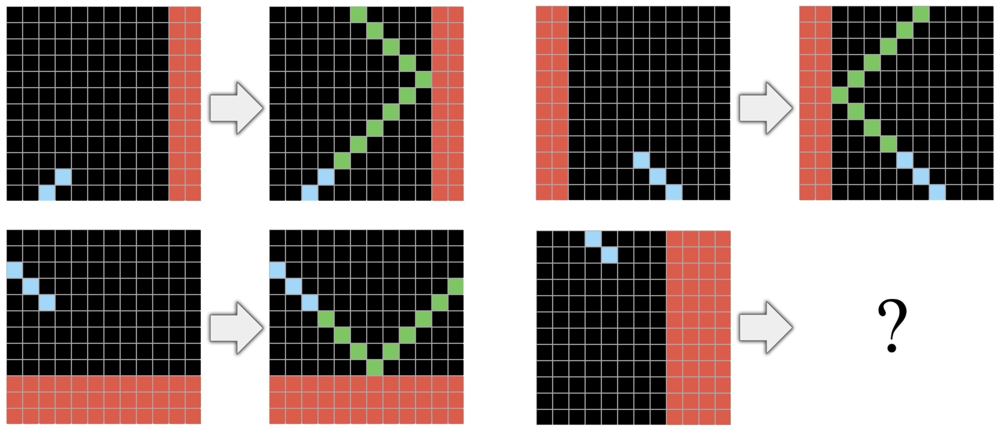
In contrast, humans excel at these tasks, leveraging innate cognitive abilities to discern patterns and apply abstract reasoning with minimal examples. This disparity underscores a fundamental gap in current AI methods and highlights the need for novel approaches.
One promising avenue lies in the realm of developmental computation, inspired by the processes observed in living systems. Neural Cellular Automata (NCA)
In the last years, most approaches for ARC-AGI relied on discrete program search, a brute force methodology. Recently,
Large Language Models (LLMs) have been utilized in different ways, including for optimizing domain-specific languages
In this paper, we introduce ARC-NCA, a novel approach that leverages the developmental dynamics of standard Neural Cellular Automata
Models and Methods
This section details the models used in obtaining developmental solutions to the Abstraction and Reasoning Corpus. We chiefly explore NCA models and their derivatives in the form of classic NCA and EngramNCA (and modifications to EngramNCA).
NCA Modes
We choose to test the Growing NCA as presented by
We believe the standard NCA model needs no detailed introduction. In short, it is implemented as a differentiable neural network embedded
in a cellular automaton framework, where each cell maintains a continuous state vector updated through convolutional neural networks (CNNs)
with learned local update rules. The architecture is depicted in . However, EngramNCA is a relatively recent model and
thus warrants a brief introduction. Its NCA features dual-state cells with distinct public (interaction-based) and private (memory-based) states.
The model is an ensemble that includes: GeneCA, an NCA which generates morphological patterns from a seed cell encoding genetic primitives
(); GenePropCA, an NCA which propagates and activates these genetic primitives across the cell network
(), similar to RNA-based communication
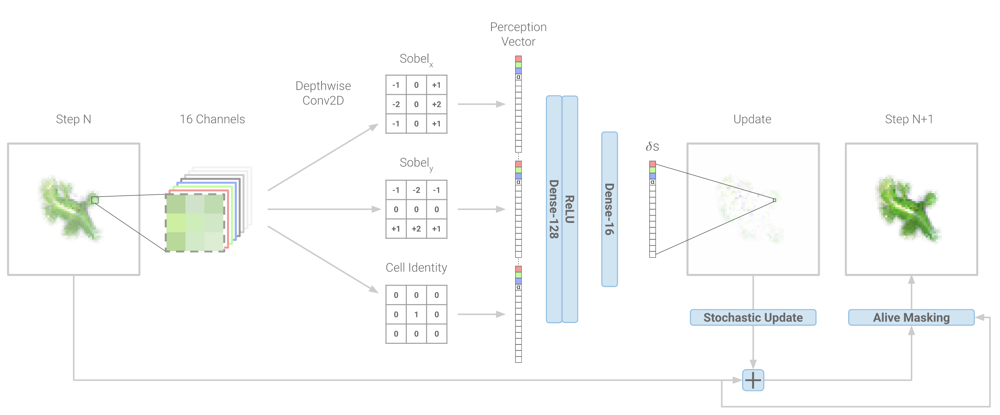
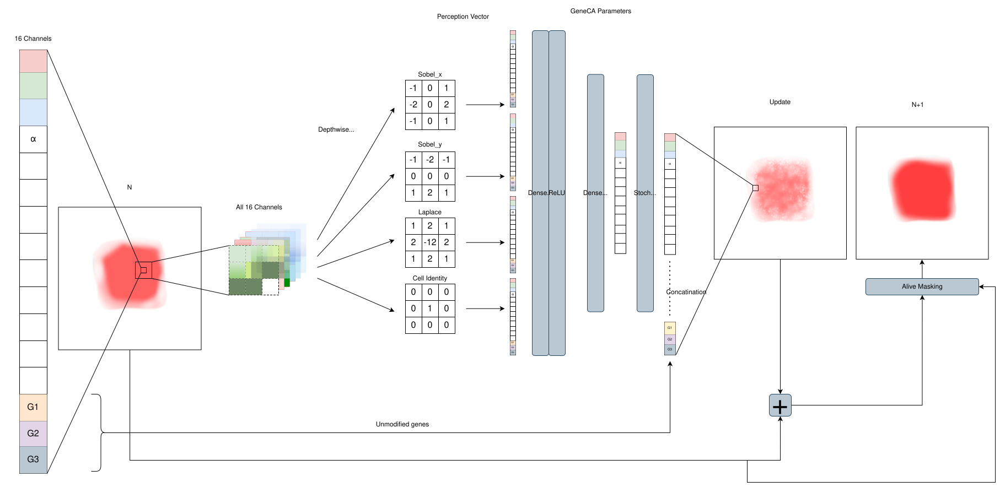
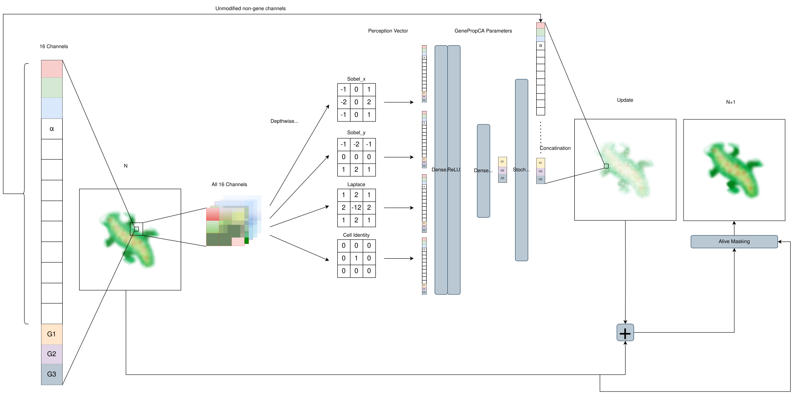
shows the different CA architectures. The augmentations are detailed in sections Toroidal versus Non-Toroidal Problems, Local versus Global Solutions, and Inappropriate Sensing.
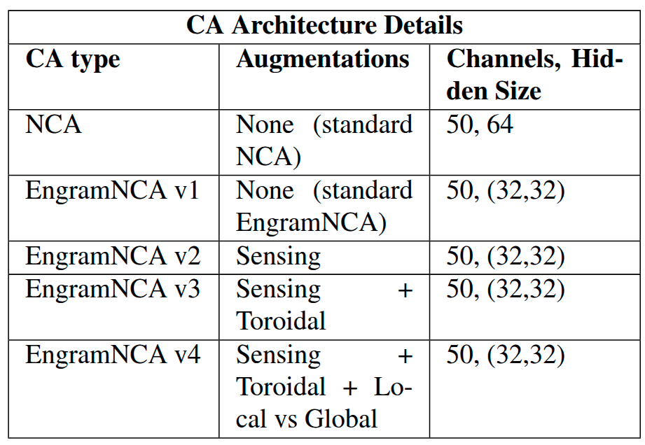
From ARC to NCA
The ARC dataset mainly comprises 2D grids with integer values. Each grid can range from 1x1 to 30x30 in size, with values ranging between 0 and 9. We address two major issues with transforming ARC grids into NCA-compatible ones:
From 2D Integer grid to 3D real-valued lattice
NCA mainly operate on 3D lattices of dimensions
- Constant
\alpha : all colors represented by the 10 integers have the same alpha value of 1. - Equal spacing: all 10 colors (0-9) are equally spaced apart in an HSL (hue, saturation, and lightness) color spectrum, starting with black for 0.
We then transform the ARC problems into an
Here,
We extend the channel dimension of the
Dealing with changing grid size
Certain ARC problems contain solutions whose grid size differs from the input. This presents a pernicious problem in that NCAs cannot modify their grid size. To deal with this, we explore two methods:
- Ignore the problematic grids: Remove them from the training procedure.
- Maximal size padding: Pad every problem to the maximal 30x30 grid size with a special padding value, one uniquely only found in the padded areas, and allow the NCA to modify the amount of padding.
Due to computational constraints, we choose to mainly focus on ignoring the problematic grids. However, Further Experiments details the experiments done with Maximal size padding. All results will be reported on the 262 problems that do not require resizing.
ARC Specific Augmentations
Toroidal versus Non-Toroidal Problems
In general, NCA operates on a toroidal lattice. While this is desirable for tasks such as growing morphologies, as it means the morphology is positionally invariant, it causes issues in ARC-AGI problems where absolute positions and grid edges are a necessary part of the reasoning. Disabling this behavior is also not a reasonable option, as some ARC-AGI problems become easier to solve if information propagates toroidally.
We remedy this in EngramNCA v3 and EngramNCA v4 in two ways: by splitting the functionality of the GeneCA and GenePropCA. The former acts on a non-toroidal lattice, while the latter acts on a toroidal lattice, and by giving each cell channel-wise local self-attention.
The hypothesis is that by splitting the functionality and imbuing it with attention, the EngramNCA might be able to choose whether or not it exhibits toroidal functionality.
Local versus Global Solutions
Another problem comes in the form of whether the NCA should focus on global or local information when solving ARC problems (or a mix of the two). This should, in theory, not be a problem. However, we qualitatively observe that some problems struggle with fine-grained local information.
We introduce a patch training scheme to force the NCA to focus on local information. This scheme works on the same principle as the standard way of NCA training, with the key difference being that the NCA is trained on- and loss is accumulated over- 3x3 patches of the grid, instead of the entire grid at once. Since this is an augmentation to NCA training, it becomes more costly to train the NCA, thus, we choose to only use this augmentation in EngramNCA v4.
Inappropriate Sensing
Due to NCA's initial applications being the simulation of the growth of organisms, the sensing mechanisms somewhat mimic biological cells' chemosensing mechanisms, in the form of gradient sensing kernels. While a helpful analogy, this might present a fundamental limitation for the purposes of ARC. To combat this, we choose to augment EngramNCA v3 and EngramNCA v4 with fully learnable sensing filters in place of the Sobel and Laplacian filters. The number of filters was chosen to match that of the standard EngramNCA.
Training
Determining the Quality of Solutions
During training, the NCA effectively produces an image. We ostensibly do not consider the developmental steps the NCA takes to reach the final solution. Thus, we take the loss to be
Model Training
We choose to solve ARC via test-time training. As stated by
.svg)
shows one training iteration of the training procedure for EngramNCA versions. The training procedure mirrors that of
Where
We use AdamW as the optimizer, with a learning rate (LR) of
Results
General Results
In this section, we present the results of each CA in the form of Mean
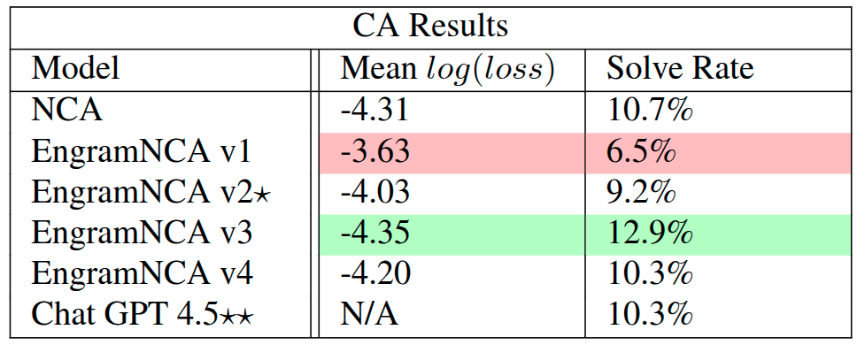
shows the mean
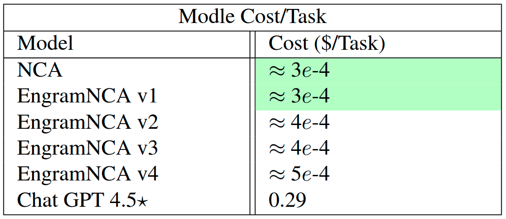
shows the cost comparison between the CA models we experimented with and Chat GPT 4.5. We chose to compare to Chat GPT 4.5 as it has solve rates similar to ours and is one of the most popular LLMs. At roughly the same performance, we see a 1000x decrease in cost.
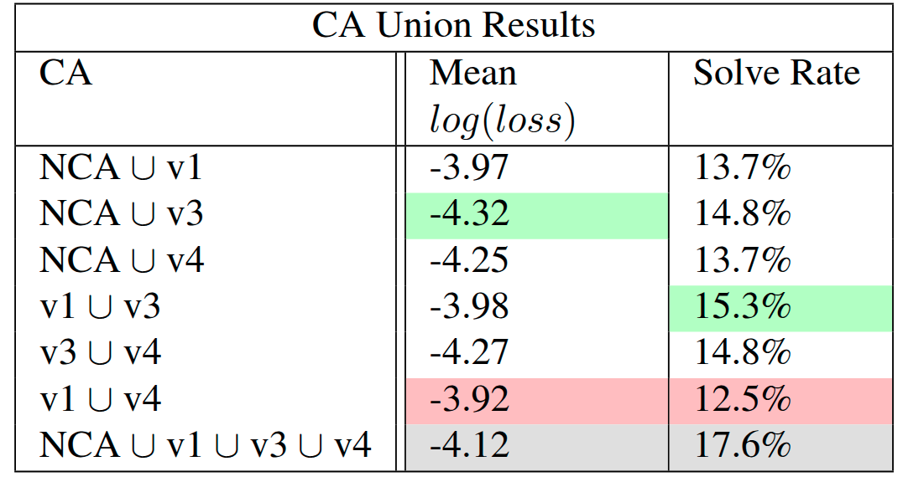
shows the mean
Solved Problems
In this section, we highlight one solved problem per CA type to show the developmental steps the CA models take to solve ARC problems. More video examples can be found here.
shows an example of one of the solutions produced by the NCA model and the two training examples. In this problem, a line of a given length is presented in a random y coordinate and the correct solution corresponds to adding green lines of increasing length above the input line and orange lines of decreasing length below. Such a solution grows correctly in an incremental manner by the NCA, which generalizes to unseen y coordinates.
shows an example of one of the solutions produced by the EngramNCA v1 model, the standard version of EngramNCA. This problem presents horizontal and vertical lines (of different color in different examples) crossing and therefore composing constrained spaces in the middle and open spaces on the outside. The correct solution fills the closed and open parts with given colors. The CA solution grows cells of green color to fill the entire space; however when they are surrounded by boundaries they are able to change to the right color.
shows an example of one of the solutions produced by the EngramNCA v3 model. In this test, the input contains single pixels and the correct solution connects those on the same horizontal or vertical line. The CA grows lines from the pixels and sometimes overshoots after the connecting pixel; however, it is able to remove the parts not needed that reach the boundaries.
shows an example of one of the solutions produced by the EngramNCA v4 model. This test contains a single vertical line on the left side of the grid. The correct solution grows a horizontal line on the bottom and a diagonal line from the bottom left corner to the top right corner. The CA grows a solution that crosses the toroidal boundary and grows from both corners which eventually connects in the middle. Solutions generalize to different grid sizes.
Almost Solved Problems
ARC-NCA have the ability to produce partial solutions, or "almost solved" problems. These solutions typically have a
few pixels wrong (or slightly wrong) but could serve as the basis for further refinement. It is also possible that these
few mistakes can be removed with improvements to the architecture or simply by increasing the size of the NCA. To determine what sort
of performance we would obtain by focusing on the partial solutions, we loosen the loss threshold to
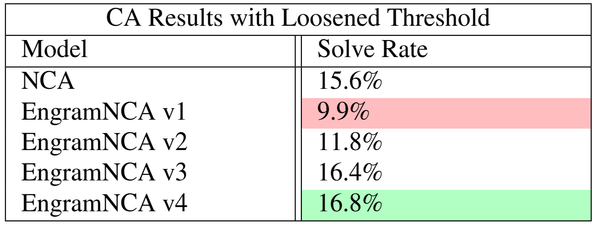

We further analyze some examples from those with minor mistakes next. shows an example of a near solution produced by EngramNCA v3. We can see that the model has the general concepts to solve the problem correctly. However, three pixels are miscolored in regions with much open space. This indicates an edge case that was probably absent in the training set. shows an example of a near solution produced by EngramNCa v1. In this example, the model produces an exact solution at some point. However, due to the general asynchronous nature of NCA, we let the model run until it ends in a stable state. This stable state is off by one pixel.
Reasoning Pitfalls
Occasionally, we observe problems where the models (qualitatively) manage some of the reasoning steps necessary to solve a particular problem, but fall short of a perfect completion. In this section, we showcase some of the model-problem pairs and attempt to reason about what reasoning pitfalls they might have encountered.
depicts an example of a partial reasoned solution produced by the EngramNCA v4 model. Here we can see the model learns one of the two reasoning steps, that of growing a pattern of the correct shape on the orange dots. However, it fails to generalise to any pattern on the left and gets the exact pixel colors wrong.
Further Experiments
In this section, we detail the results of two further experiments conducted: Increasing the dimension of the hidden layer of EngramNCA v3, and solving all ARC-AGI problems by use of maximal padding as described in Dealing with changing grid sizes.
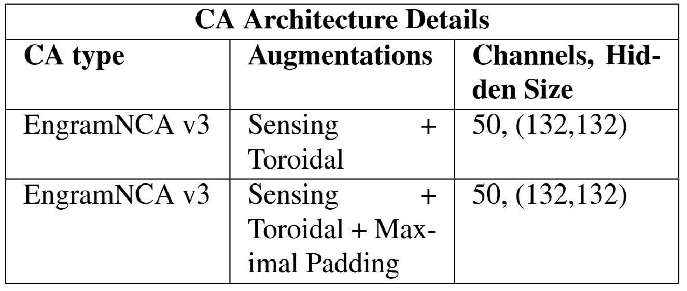
shows the architecture details for larger EngramNCA v3 and its maximally padded version.
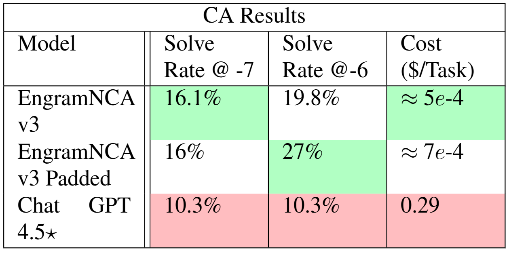
shows the results of EngramNCA v3 and its maximally padded version as compared to Chat GPT 4.5. By increasing the hidden size, we can observe an increase in the number of problems solved. Maximal padding increases the number of problems the CA has to solve, yet we do not see a decrease in the percentage of problems the CA can solve, suggesting that self-size modification is trivial for the CA or that the extra information provided by the padding tokens has helped with some of the problems. The maximal padding does incur a cost as NCA memory usage and run time scale poorly with lattice size. Despite this, they both still outperform Chat GPT 4.5. Leaving room for partial solutions, we see that the maximally padded version sees a significant increase in its solve rate (27% versus 16%).
Related Works
The application of cellular automata (CA) models, and morphogenetic models in general
A work using an evolutionary approach is
Summary and Discussion
This work introduces ARC-NCA, a developmental framework utilizing Neural Cellular Automata to address the challenges posed by the Abstraction and Reasoning Corpus benchmark, which requires robust abstraction and reasoning capabilities derived from minimal training data. Our ARC-NCA models exploit the intrinsic properties of NCAs to emulate complex, emergent behaviors reminiscent of biological developmental processes. We evaluated standard NCA alongside several modified versions of EngramNCA, which were augmented to better accommodate specific characteristics of ARC tasks. These modifications encompassed enhanced sensing mechanisms, adjustments in local versus global information processing, and strategies for managing toroidal lattice behaviors.
The results demonstrated that ARC-NCA models achieved solve rates comparable to, and sometimes surpassing, those of popular LLMs such as ChatGPT 4.5, notably at significantly reduced computational costs. When considering partially correct solutions, success rates increased remarkably, indicating potential for further enhancements such as architectural modifications and parameters scaling. Analysis of solved and partially solved problems provided insights into the developmental nature of NCAs, revealing strengths in iterative refinement and emergent reasoning capabilities. Conversely, examples of reasoning pitfalls highlighted specific limitations in NCAs' generalization capacities, particularly in handling fine-grained details or novel edge cases not well represented in training examples.
In light of the recent introduction of ARC-AGI-2
Future Work
Besides ARC-AGI-2 as a natural follow up, we outline here several research directions that warrant further investigation.
A pre-training mechanism that could facilitate learning each single problem from the few available examples would be beneficial. Such pre-training mechanism should provide knowledge at an abstraction level that is appropriate for the type of visual reasoning required for ARC, such as basic transformations that can generalize across tasks followed by task-specific fine-tuning. Alternatively, a criticality pre-training could be an interesting direction. Criticality is a behavioral regime that is know to be ideal for different kinds of computation. One hypothesis is that NCAs at criticality would be better suited for learning ARC tasks than randomly initialized NCAs.
Our results are documented on single trials, as ARC allow submission of only two candidate solutions. However, for the sake of a more rigorous investigation, multiple runs and their stability should be investigated further. Additionally, in order to compete in the official ARC-AGI leaderboard, solutions would have to be submitted for the semi-private and private evaluation sets.
Future directions at the intersection of NCAs and LLMs are considered promising avenues. For example, LLMs may be used to suggest optimized NCA architectural choices and hyperparameters. Further, LLMs with reasoning abilities may be used as error correction mechanisms for the (almost correct) developmental solutions provided by NCAs. Other correction mechanisms may also be considered, for example relying on NCAs or other computer vision techniques.
Finally, NCAs operating at an abstract, latent representation